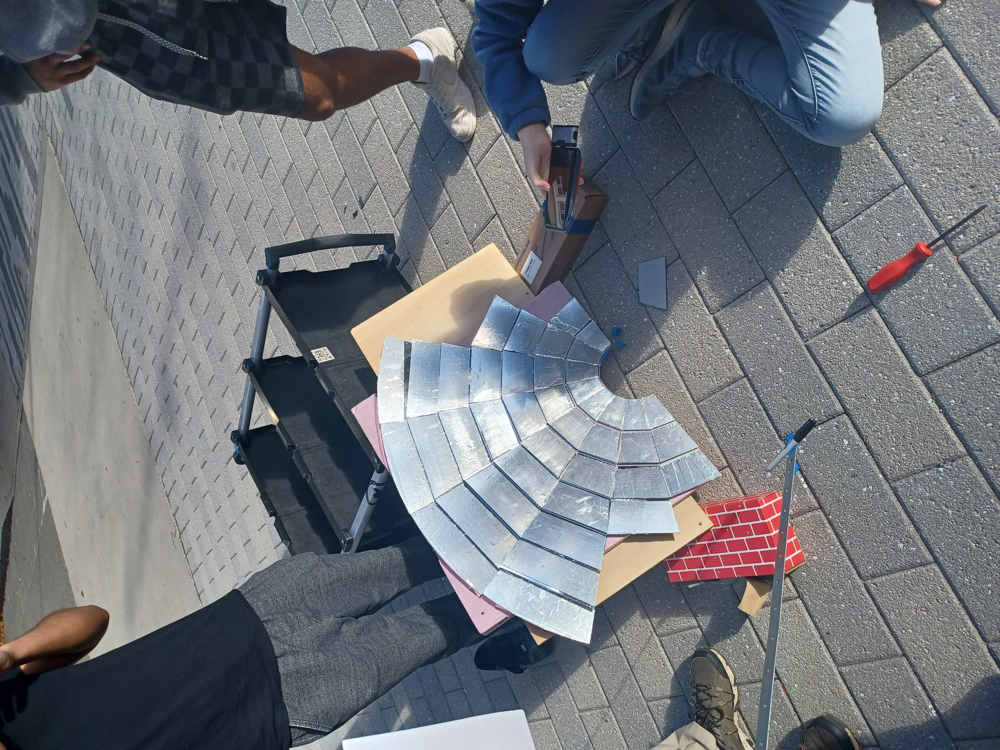

### Week 9
##### _Monday, October 31_
We completed applying the reflective tape onto the panels of the Fresnel reflector, and we made a secondary reflector from the center of the main one. We took the setup outside to verify our focal lengths.
<img src="./testing_main.jpg" alt="testing_main" width="500"/>
We had an interesting discovery about the focal lengths. Our main reflector maintained a focal length of approximately 1m, which was expected from prior calculations. However, we came across an issue in that once we established the length of the main reflector and added the secondary reflector to see the bounce-back, we couldn't find the bounce-back. After some troubleshooting, we discovered that the focal length of the secondary reflector was 6 inches, which was significantly shorter than that of the main reflector.
This would cause some issues if we used this exact design for our final product, as the central pipe to funnel energy into the salt battery would not have much energy funneled into it as a result of the extremely short bounce length. We were glad to find this and are now looking to create a flat or concave secondary reflector to maintain the 1m focal length of the main reflector.

While we were doing our experiment on the reflector, the solar tracking team was working on the tracking device and got it to be fully functional.
<video width = "500" controls>
<source src="./tracker.MP4" type="video/MP4">
</video>
##### _Wednesday, November 2_
We set decided to test the best reflective materials from the prior week to compare to tinfoil and a new gold film. We retested the 2 reflective tapes and added swatches of tin foil (dull and shiny sides out) and one piece of gold foil. We first had the swatches facing the sky to verify that they were, in fact, able to reflect energy, and then we switched the orientation toward the sun to see which ones would be the best. The two tapes were still the best samples, along with the foil, but we discussed the difficulty of applying foil as opposed to the ease of application of the tape and are probably going to use the tape for our final product.
<img src="./cold temp.jfif" alt="cold temp" width="500"/>
<img src="./hot temp.jfif" alt="hot temp" width="500"/>
<img src="./cone temp.jfif" alt="cone temp" width="500"/>
The foil cone was ineffective, and there was evidence that the foil did not reflect or retain infrared energy as well as the other materials. The cone was warm to the touch, corroborating this conclusion. As a result, the gold foil alone would not be the best material for use in our cooker and would need to be layered over something more opaque to be effective.
<img src="./cone temp.jfif" alt="cone temp" width="500"/>
[Head back to the home page](../index.html).